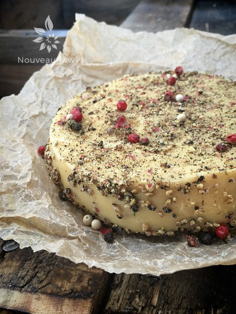

Brie au Poivre

Brie is a type of soft cheese that is pale in color. Au Poivre means a heavily peppered (coated) cheese. So, what I am presenting to you is a pepper-crusted, cultured, raw, vegan, cashew cheese.
If you are new to making raw cheeses–well, I guess I should say raw “cheeses” and let me clarify, this is not the typical dairy cheese that you may be used to. Most raw “cheeses” are nut-based and vegan.
Creating That Cheesy Tang
There are a few ways to create the cheese flavor. My favorite way is by using probiotics. It can take anywhere between 8-48 hours to culture. The reason that I quoted such a large time span is that it all depends on how warm the ambient air is and how strong you like the tangy-cheesy flavor.
Another way to boost the health benefits is through rejuvelac. It is made from sprouted grains, and the process just to make that takes 24-48 hours. Then you still have the culturing time of the cheese.
The addition of nutritional yeast also helps to give it that “cheesy” flavor. All raw vegan cheeses can be quite delicious, and if you are new to making them, I encourage you to give them a try. They may seem intimidating at first, but in reality, they are effortless to make. For more ideas, textures, and flavors, be sure to check out some other recipes that I have posted here. I hope you enjoy this recipe. Many blessings, amie sue
Yields about 2 cups
Cheese:
- 2 cups (286 g) raw cashews, soaked 2+ hours
- 3/4 cup (158 g) warm water
- 1 tsp (2 g) probiotic powder
Add-ins:
- 2 1/2 Tbsp (12 g) nutritional yeast
- 1 Tbsp (9 g) onion powder
- 1/4 tsp (1 g) fresh powdered nutmeg
- 1 1/2 tsp (10 g) Himalayan pink salt
- 1/4 tsp (1 g) white pepper
Crusted with:
- 3 Tbsp crushed pink peppercorns
Preparation:
- First and foremost, make sure all of the utensils and pieces of equipment you use for culturing are sterilized to avoid growing bad bacteria.
- If at any time you see mold–fuzzy, black, or pink–it will need to be tossed.
- After soaking the cashews, drain and discard the soak water.
- Soaking will help soften the cashews for blending, and it will help to reduce the phytic acid.
- In a high-speed blender, blend the soaked cashews with probiotics and lukewarm water until smooth.
- Depending on the blender, this can take up to 4 minutes.
- Place in a glass bowl and cover with a towel.
- Allow it to rest at room temperature for 24-48 hours to culture.
- If you don’t want a robust fermenting flavor, stop it around 8 hours and give it a taste test.
- After it is through culturing, hand mix in the nutritional yeast, onion powder, nutmeg, sea salt, and white pepper.
- After placing it in a container, cover the top with the crushed peppercorns.
- If you wish to create a rind, skip to that section below; otherwise, cover and store in the fridge.
- Keeping the cheese in the fridge will slow down the culturing phase.
Creating a rind (optional)
- Transfer the “cheese” to a ring mold or the ring of a Springform pan, lining the base with plastic.
- Place the mold in the freezer for several hours, so it sets up nice and firm.
- Carefully remove the cheese from the mold and place it on a non-stick sheet. Coat with cracked peppercorns.
- Dehydrate for 1 hour at 145 degrees (F), then reduce the heat to 115 degrees (F) and continue to dry for up to 24 hours.
- This process will cause a rind to develop around the edges, but the cheese within will remain soft.
- Once done, enjoy it! There should be a nice rind on the outside and creamy “cheese” on the inside.
- Store in an airtight container in the fridge for approximately 7 days. The “cheese” will continue to culture, but once chilled, it slows down considerably.

© AmieSue.com